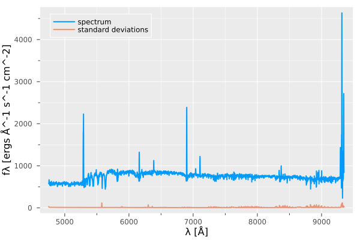
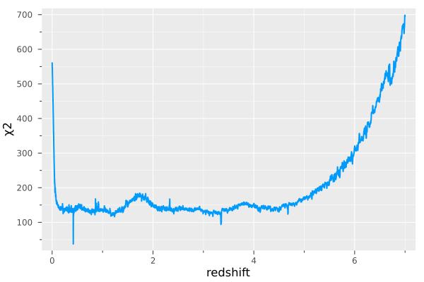

Usage Example
Let's start by importing the needed packages
using Moose, FITSIO, PlotsPrecompiling DisplayAs...
623.7 ms ✓ DisplayAs
1 dependency successfully precompiled in 1 seconds
Let's instantiate a rest frame wavelength grid (Γgrid) and the Basis Struct.
wgrid = Γgrid()
basis = Basis()Let's load a spectrum from a .fits file,
hdul = FITS("../../../data/spectra_sample/udf10_00002.fits", "r")
fλ = read(hdul["DATA"])
σλ = read(hdul["STAT"]) |> (x -> sqrt.(x))
λref = read_header(hdul["DATA"])["CRVAL1"]
L = read_header(hdul["DATA"])["NAXIS1"]
δλ = read_header(hdul["DATA"])["CDELT1"]
λ = collect(Float32, λref .+ (0:L-1) .* δλ)
close(hdul)Take a look at the spectrum!
p = plot(λ, fλ, lw =2 , xlabel ="λ [Å]", ylabel ="fλ [ergs Å^-1 s^-1 cm^-2]", label ="spectrum",)# size =(500,200))
plot!(p, λ, σλ, lw =2 , alpha = 0.7, label = "standard deviations")
Usually raw data comes with many NaNs and Infs, let us clean the flux densities and the standard deviations. We assign zeros for NaNs in fluxes, and a high number for NaNs and Infs in standard deviations,
replace!(fλ, NaN => 0)
replace!(σλ, NaN => 1f6, Inf => 1f6)
σλ[fλ .== 0] .= 1f6Now, we can interpolate the flux densities and standard deviations to the rest frame grid, for this just run,
intrpfλ, intrpσλ = interpolate(basis, fλ .* λ, σλ .* λ , λ)Run a threaded NNLS to test all possible redshifts
χ2 = threaded_nnls(basis, intrpfλ, intrpσλ)Plot the obtained χ2 curve.
p = plot(wgrid.ζ, χ2, xlabel = "redshift", ylabel= "χ2")
This page was generated using Literate.jl.